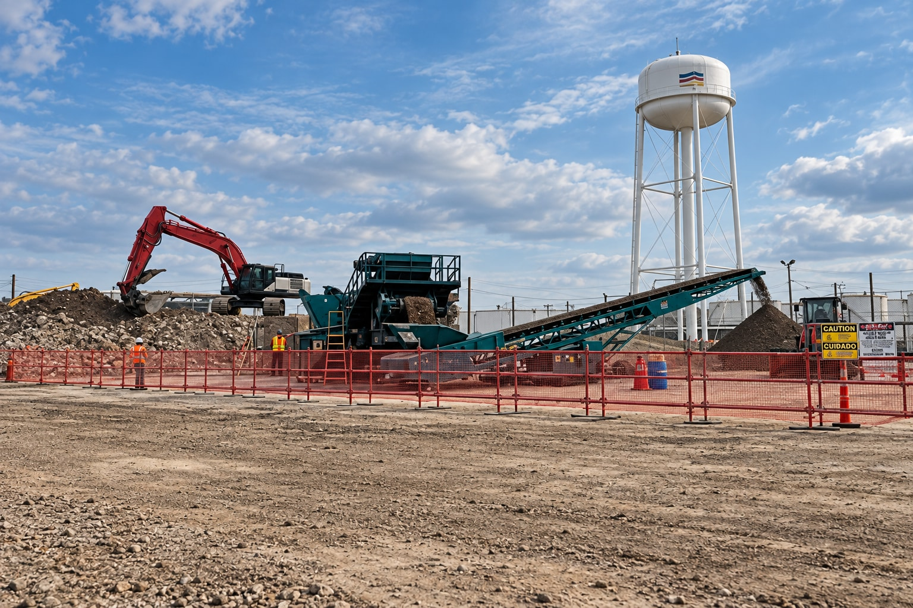

NorthStarWe Bring Answers.
NorthStarWe Bring Answers.Environmental services
Planning guide / 01
Planning guide / 01
Environmental services / Planning guide
Connect the site's conditions to its intended next use.
For property owners, EHS teams and redevelopment leaders, NorthStar connects environmental remediation with material handling, civil interfaces and restoration. Begin with the site evidence and the outcome the work must support.

Soil, water and materials move together.
Remediation decisions can affect excavation, stockpiles, water management and restoration. Bring those workstreams into the same scope discussion, with the relevant environmental professionals and acceptance responsibilities identified.
Site evidenceMaterial pathwaysRestoration outcomes